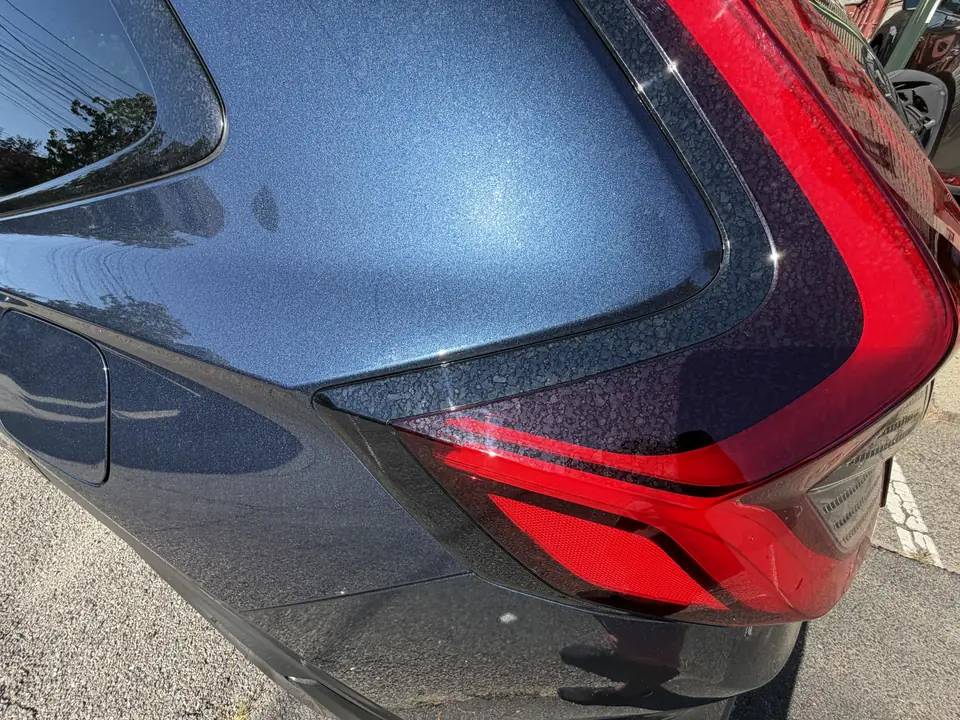
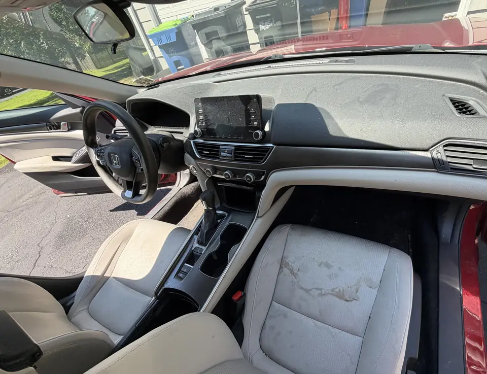
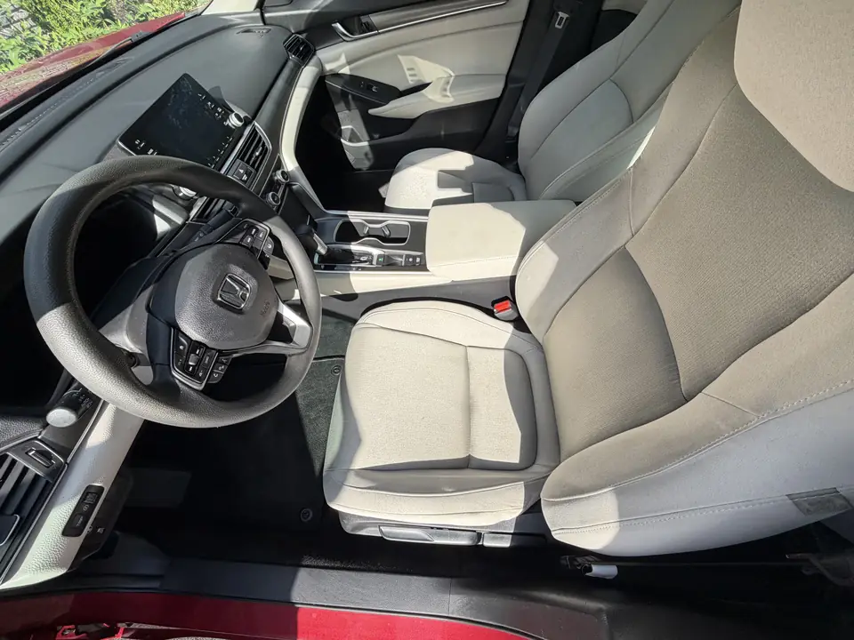

Featured guide
Car Wash vs. Car Detailing: What’s Actually Different?
Not really — but you also don't need a full detail every time the car gets dirty. A wash is maintenance. Detailing is condition-based deeper work, and the package decides how deep.
Here's the easier way to think about it
Typical car wash
- Routine exterior dirt
- Faster
- Maintenance-oriented
- Interior skipped or a light vacuum
Professional detail
- Deeper interior and exterior attention
- Stains, pet hair, or contamination — depending on package
- Protection or restoration-oriented work where it applies
- Hours, with a look-over — not a tunnel cycle
That's the real difference between a car wash and detailing. If all you're dealing with is normal road dirt after a rainy week, wash it.
If the seats are stained, pet hair is buried in the carpet, the wheels are packed, and the paint still feels rough after washing, that's a different job.
If you're commuting through North Jersey in February, salt on the wheels and sills is the usual leftover a tunnel rinse barely touches.
A vacuum and wipe-down is not the same as extraction or odor work. If you booked maintenance, that's what you should expect. Shampoo isn't automatic.
You wash the car. It still doesn't look clean.
That's usually the point where a normal wash and detailing start becoming two different things. Loose dirt rinses off. Mineral spots, bonded film, and that sandpaper feel on the clear coat don't.

Inside, the gap is even more obvious. Crumbs on the floor? Vacuum. Stains in light cloth, dust packed into texture, hair in the carpet? Now we're talking about a different job — and even then, not every mark comes out.


Side-by-side
| What you care about | Typical car wash | Professional detail |
|---|---|---|
| Time | Minutes | Hours, with a final look-over |
| Exterior dirt | Loose film and dust | Can include decontamination when the package calls for it |
| Interior | Optional vacuum, if at all | From vacuum and wipe-down up to extraction — package dependent |
| Stains and odors | Usually untouched | May improve; not every stain or odor can be fully removed |
| Protection | Little that lasts | Wax, sealant, or coating only on eligible packages |
Not every detailing package includes shampoo, extraction, odor treatment, or paint correction. Package scope matters. That's the part people usually miss.
When a wash is still the right call
Most weeks, it is. Use a wash for upkeep. Book a detail when the car has been neglected, pets or kids changed the interior, or you want protection — and pick the package that matches that job. Mobile detailing is how we do that work: the technician comes to the vehicle.
For how often to get your car detailed after that, see how often you should detail your car.
Questions people actually ask
Isn't detailing just an expensive car wash?
Not really — but you also don't need a full detail every time the car gets dirty. A wash is for loose road dirt. Detailing is for stains, packed hair, odors, and paint that still feels rough after a rinse. What you get depends on the package, not the word detail.
Do I need a full detail if the car isn't that dirty?
If the seats are clean and the carpet just needs a quick vacuum, a deep detail is probably more than you need. It's worth it when a wash still leaves the paint feeling rough, the carpets looking stained, or the cabin smelling used.
Can you actually get every stain out?
No. A lot of stains lighten. Dye transfer, old spills, and worn fibers don't always disappear. We'll tell you if a mark looks like it's staying.
What if the smell comes back?
Sometimes. The big question is what caused it. Surface odor in fabric often improves after cleaning. Odor in padding, the HVAC, or from smoking may need deeper treatment and still might not be gone in one visit.
Does a basic detail include shampoo?
Not automatically. A basic maintenance interior is usually vacuum plus wipe-down. Shampoo and extraction are a different job. That doesn't automatically mean you need shampoo.
Can you really get all the pet hair out?
Hair sitting on top usually comes up with a thorough vacuum. Hair woven deep into the fibers takes more work and may not come out 100% in one visit, especially in older carpet.
When is a regular wash still enough?
When you're mainly dealing with normal road dirt and the interior is already in decent shape. Wash it. Book a detail when soil is embedded, the cabin needs more than a vacuum, or the paint needs more than soap — depending on the package.